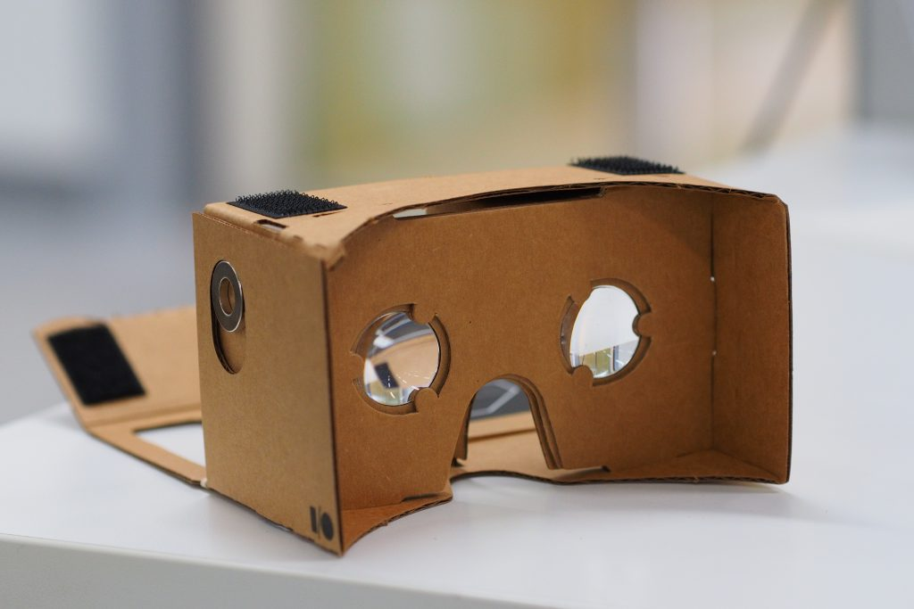
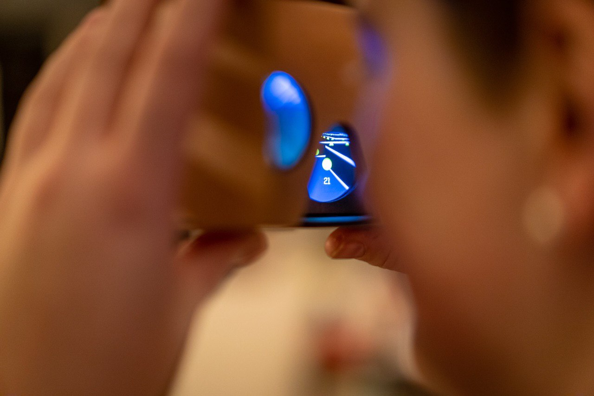
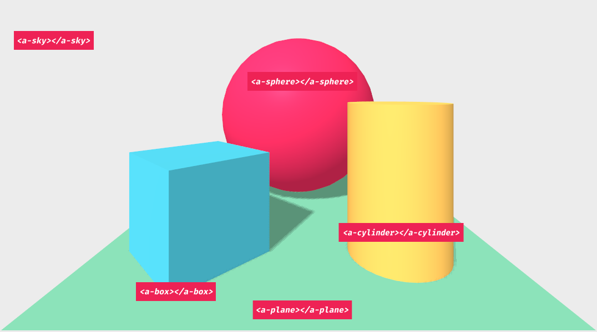

Pac-man VR in Vue

Elke Heymans
- 6 years of development experience
- VueJS developer
- Photography
- @ElkeBxl

Pac-man
The original game

Some info

- Toru Iwatani
- 1980
- Originally named Pakkuman, based on "paku paku taberu"
- Multiple versions
- Highest-grossing and best-selling game series of all time: +$14 billion
Pac-man and women
- Arcade games targeted for men
- Non-violent, cheerful video game
- Based on what women like to do in their time...

Electronic Game Magazine in 1982

Pac-man VR (1996)
- Arcade game
- Made by Virtuality in 1996
- Visette virtual reality visor (276x372 resolution / eye)
- Moveable joystick
- Tracking was done with magnets
- Stand-up version


VR today


Google wanted it cheaper!


VR on the web
WebVR
- Mozilla
- Spring of 2014
-
Goals:
- Detect VR devices
- Query capabilities
- Poll position and orientation
- Render with appropriate framerate
Experimental technology...
Your phone as the hardware
- Split screen
-
Use of
- gyroscope
- accelerometer
- magnetometer
WebVR becomes WebXR
- Addition of AR
- Working draft to become a web standard
- Proper emulator extensions

Great! But what about code...?
A 360 degree panorama photo in WebVR
<!doctype html>
<!--
Copyright 2016 The Chromium Authors. All rights reserved.
Use of this source code is governed by a BSD-style license that can be
found in the LICENSE file.
-->
<html>
<head>
<meta charset="utf-8">
<meta name="viewport" content="width=device-width, initial-scale=1, user-scalable=no">
<meta name="mobile-web-app-capable" content="yes">
<meta name="apple-mobile-web-app-capable" content="yes">
<!-- Origin Trial Token, feature = WebVR (For Chrome M62+), origin = https://webvr.info, expires = 2018-09-10 -->
<meta http-equiv="origin-trial" data-feature="WebVR (For Chrome M62+)" data-expires="2018-09-10" content="AhQcOrbjvS0+50wwuqtAidzraKNfZj8Bj159g2+2LsT5QRHe9IeebCl5ApORwd3oGxfKzl5H8s5K3aTMNzC+5gsAAABPeyJvcmlnaW4iOiJodHRwczovL3dlYnZyLmluZm86NDQzIiwiZmVhdHVyZSI6IldlYlZSMS4xTTYyIiwiZXhwaXJ5IjoxNTM2NjAxNDEzfQ==">
<title>XX - 360 Panorama</title>
<!--
This sample demonstrates how to render a 360 degree panoramic image in VR.
-->
<style>
#webgl-canvas {
box-sizing: border-box;
height: 100%;
left: 0;
margin: 0;
position: absolute;
top: 0;
width: 100%;
}
</style>
<!-- This entire block in only to facilitate dynamically enabling and
disabling the WebVR polyfill, and is not necessary for most WebVR apps.
If you want to use the polyfill in your app, just include the js file and
everything will work the way you want it to by default. -->
<script src="js/third-party/webvr-polyfill.js"></script>
<script src="js/third-party/wglu/wglu-url.js"></script>
<script>
// Dynamically turn the polyfill on if requested by the query args.
if (WGLUUrl.getBool('polyfill', false)) {
var polyfill = new WebVRPolyfill({
// Ensures the polyfill is always active on mobile, due to providing
// a polyfilled CardboardVRDisplay when no native API is available,
// and also polyfilling even when the native API is available, due to
// providing a CardboardVRDisplay when no native VRDisplays exist.
PROVIDE_MOBILE_VRDISPLAY: true,
// Polyfill optimizations
DIRTY_SUBMIT_FRAME_BINDINGS: true,
BUFFER_SCALE: 0.75,
});
}
</script>
<!-- End sample polyfill enabling logic -->
<script src="js/third-party/gl-matrix-min.js"></script>
<script src="js/third-party/wglu/wglu-program.js"></script>
<script src="js/third-party/wglu/wglu-stats.js"></script>
<script src="js/vr-panorama.js"></script>
<script src="js/vr-samples-util.js"></script>
</head>
<body>
<canvas id="webgl-canvas"></canvas>
<script>
/* global mat4, vec3, VRPanorama, WGLUStats, VRSamplesUtil */
(function () {
"use strict";
var vrDisplay = null;
var frameData = null;
var projectionMat = mat4.create();
var poseMat = mat4.create();
var viewMat = mat4.create();
var vrPresentButton = null;
// ================================================================
// WebGL and WebAudio scene setup. This code is not WebVR specific.
// ================================================================
// WebGL setup.
var gl = null;
var panorama = null;
var stats = null;
function onContextLost( event ) {
event.preventDefault();
console.log( 'WebGL Context Lost.' );
gl = null;
panorama = null;
stats = null;
}
function onContextRestored( event ) {
console.log( 'WebGL Context Restored.' );
init(vrDisplay ? vrDisplay.capabilities.hasExternalDisplay : false);
}
var webglCanvas = document.getElementById("webgl-canvas");
webglCanvas.addEventListener( 'webglcontextlost', onContextLost, false );
webglCanvas.addEventListener( 'webglcontextrestored', onContextRestored, false );
function init (preserveDrawingBuffer) {
var glAttribs = {
alpha: false,
antialias: false,
preserveDrawingBuffer: preserveDrawingBuffer
};
gl = webglCanvas.getContext("webgl", glAttribs);
if (!gl) {
gl = webglCanvas.getContext("experimental-webgl", glAttribs);
if (!gl) {
VRSamplesUtil.addError("Your browser does not support WebGL.");
return;
}
}
gl.enable(gl.DEPTH_TEST);
gl.enable(gl.CULL_FACE);
panorama = new VRPanorama(gl);
panorama.setImage("media/textures/pano_4k.jpg");
var enablePerformanceMonitoring = WGLUUrl.getBool(
'enablePerformanceMonitoring', false);
stats = new WGLUStats(gl, enablePerformanceMonitoring);
// Wait until we have a WebGL context to resize and start rendering.
window.addEventListener("resize", onResize, false);
onResize();
window.requestAnimationFrame(onAnimationFrame);
}
// ================================
// WebVR-specific code begins here.
// ================================
function onVRRequestPresent () {
vrDisplay.requestPresent([{ source: webglCanvas }]).then(function () {
}, function (err) {
var errMsg = "requestPresent failed.";
if (err && err.message) {
errMsg += "<br/>" + err.message
}
VRSamplesUtil.addError(errMsg, 2000);
});
}
function onVRExitPresent () {
if (!vrDisplay.isPresenting)
return;
vrDisplay.exitPresent().then(function () {
}, function () {
VRSamplesUtil.addError("exitPresent failed.", 2000);
});
}
function onVRPresentChange () {
onResize();
if (vrDisplay.isPresenting) {
if (vrDisplay.capabilities.hasExternalDisplay) {
VRSamplesUtil.removeButton(vrPresentButton);
vrPresentButton = VRSamplesUtil.addButton("Exit VR", "E", "media/icons/cardboard64.png", onVRExitPresent);
}
} else {
if (vrDisplay.capabilities.hasExternalDisplay) {
VRSamplesUtil.removeButton(vrPresentButton);
vrPresentButton = VRSamplesUtil.addButton("Enter VR", "E", "media/icons/cardboard64.png", onVRRequestPresent);
}
}
}
if (navigator.getVRDisplays) {
frameData = new VRFrameData();
navigator.getVRDisplays().then(function (displays) {
if (displays.length > 0) {
vrDisplay = displays[displays.length - 1];
vrDisplay.depthNear = 0.1;
vrDisplay.depthFar = 1024.0;
init(true);
if (vrDisplay.capabilities.canPresent)
vrPresentButton = VRSamplesUtil.addButton("Enter VR", "E", "media/icons/cardboard64.png", onVRRequestPresent);
// For the benefit of automated testing. Safe to ignore.
if (vrDisplay.capabilities.canPresent && WGLUUrl.getBool('canvasClickPresents', false))
webglCanvas.addEventListener("click", onVRRequestPresent, false);
window.addEventListener('vrdisplaypresentchange', onVRPresentChange, false);
window.addEventListener('vrdisplayactivate', onVRRequestPresent, false);
window.addEventListener('vrdisplaydeactivate', onVRExitPresent, false);
} else {
init(false);
VRSamplesUtil.addInfo("WebVR supported, but no VRDisplays found.", 3000);
}
}, function () {
VRSamplesUtil.addError("Your browser does not support WebVR. See <a href='http://webvr.info'>webvr.info</a> for assistance.");
});
} else if (navigator.getVRDevices) {
init(false);
VRSamplesUtil.addError("Your browser supports WebVR but not the latest version. See <a href='http://webvr.info'>webvr.info</a> for more info.");
} else {
init(false);
VRSamplesUtil.addError("Your browser does not support WebVR. See <a href='http://webvr.info'>webvr.info</a> for assistance.");
}
function onResize () {
if (vrDisplay && vrDisplay.isPresenting) {
var leftEye = vrDisplay.getEyeParameters("left");
var rightEye = vrDisplay.getEyeParameters("right");
webglCanvas.width = Math.max(leftEye.renderWidth, rightEye.renderWidth) * 2;
webglCanvas.height = Math.max(leftEye.renderHeight, rightEye.renderHeight);
} else {
webglCanvas.width = webglCanvas.offsetWidth * window.devicePixelRatio;
webglCanvas.height = webglCanvas.offsetHeight * window.devicePixelRatio;
}
}
function getPoseMatrix (out, pose) {
// When rendering a panorama ignore the pose position. You want the
// users head to stay centered at all times. This would be terrible
// advice for any other type of VR scene, by the way!
var orientation = pose.orientation;
if (!orientation) { orientation = [0, 0, 0, 1]; }
mat4.fromQuat(out, orientation);
mat4.invert(out, out);
}
function onAnimationFrame (t) {
// do not attempt to render if there is no available WebGL context
if (!gl || !stats || !panorama) {
return;
}
stats.begin();
gl.clear(gl.COLOR_BUFFER_BIT | gl.DEPTH_BUFFER_BIT);
if (vrDisplay) {
vrDisplay.requestAnimationFrame(onAnimationFrame);
vrDisplay.getFrameData(frameData);
// FYI: When rendering a panorama do NOT use view matricies directly!
// That will make the viewer feel like their head is trapped in a tiny
// ball, which is usually not the desired effect. Instead, render both
// eyes from a single viewpoint.
getPoseMatrix(viewMat, frameData.pose);
if (vrDisplay.isPresenting) {
gl.viewport(0, 0, webglCanvas.width * 0.5, webglCanvas.height);
panorama.render(frameData.leftProjectionMatrix, viewMat);
gl.viewport(webglCanvas.width * 0.5, 0, webglCanvas.width * 0.5, webglCanvas.height);
panorama.render(frameData.rightProjectionMatrix, viewMat);
vrDisplay.submitFrame();
} else {
gl.viewport(0, 0, webglCanvas.width, webglCanvas.height);
mat4.perspective(projectionMat, Math.PI*0.4, webglCanvas.width / webglCanvas.height, 0.1, 1024.0);
panorama.render(projectionMat, viewMat);
stats.renderOrtho();
}
} else {
window.requestAnimationFrame(onAnimationFrame);
// No VRDisplay found.
gl.viewport(0, 0, webglCanvas.width, webglCanvas.height);
mat4.perspective(projectionMat, Math.PI*0.4, webglCanvas.width / webglCanvas.height, 0.1, 1024.0);
mat4.identity(viewMat);
panorama.render(projectionMat, viewMat);
stats.renderOrtho();
}
stats.end();
}
})();
</script>
</body>
</html>- 200+ lines of code...
- Polyfill
- VR-mode and non-VR-mode implementation
- WebGL Canvas management
... that's a lot of effort
The technology we'll use

Features
- HTML
- Declarative, extensible and composable structure to three.js
- Supports most VR headsets
- Visual inspector

A 360 degree panorama photo in A-frame
<!DOCTYPE html>
<html>
<head>
<meta charset="utf-8">
<title>360° Image</title>
<meta name="description" content="360° Image - A-Frame">
<script src="../../../dist/aframe-master.js"></script>
</head>
<body>
<a-scene>
<a-sky src="puydesancy.jpg" rotation="0 -130 0"></a-sky>
<a-text font="kelsonsans" value="Puy de Sancy, France"
width="6" position="-2.5 0.25 -1.5"
rotation="0 15 0"></a-text>
</a-scene>
</body>
</html>- Automatic polyfills
- Implement VR mode, get non-VR mode for free
- Automatic WebGL Canvas management
Building a scene: the result
Building a scene: the setup
<!DOCTYPE html>
<head>
<script src="https://aframe.io/releases/1.0.3/aframe.min.js"></script>
</head>
<body>
<a-scene>
<a-box position="-1 0.5 -3" rotation="0 45 0" color="#4CC3D9"></a-box>
<a-sphere position="0 1.25 -5" radius="1.25" color="#EF2D5E"></a-sphere>
<a-cylinder position="1 0.75 -3" radius="0.5" height="1.5" color="#FFC65D"></a-cylinder>
<a-plane position="0 0 -4" rotation="-90 0 0" width="4" height="4" color="#7BC8A4"></a-plane>
<a-sky color="#ECECEC"></a-sky>
</a-scene>
</body>
</html>Defining the game concept
Game features
- Maze
- Move within the maze
- Add 1 ghost
- Collecting dots
The maze
- Height of the walls?
- Transparency?
- Use of colours?
- Themeing?
Themeing
- As classic as possible
- Horror version?
- Something completely different?
Started of with horror version... ended with classic
How to control it?
- No WASD or arrow keys
- We can look around
- Move in the direction we're looking!
- Challenge of constant speed
Implementing the game
Usage of Vue
- computed properties = reactivity
- Declarative implementation
- Allows for components
export default Vue.extend({
components: {
Maze
},
data: function() {
return {
position: {
x: 20,
y: 0,
z: 20
}
};
},
computed: {
cameraPosition(): string {
return `${this.position.x} ${this.position.y} ${this.position.z}`;
}
}
});
<a-scene>
<a-entity id="rig" :position="cameraPosition">
<a-entity id="camera" camera look-controls
position="0 1.6 0" ref="camera"></a-entity>
</a-entity>
<a-entity light="type: point; castShadow: false; intensity: 1;"
:position="cameraPosition"></a-entity>
<a-sky color="#111"></a-sky>
<a-plane rotation="-90 0 0" color="#ccc"
height="750" width="630"
position="0 -1.5 0"></a-plane>
<a-sphere color="red" :radius="blockSize / 2"
:position="ghostPosition"></a-sphere>
<maze :maze="maze" :blockSize="blockSize"></maze>
</a-scene>
The superbasic setup
- a-sky + a-plane
- Free movement on x-axis, y-axis and z-axis
Add some lighting
-
Add lightsources
- Ambient light
- Point light
<a-entity light="type: ambient; intensity: 0.5;"></a-entity>
<a-entity light="type: point; castShadow: false; intensity: 1;"
:position="cameraPosition"></a-entity>Rendering the maze
- 1 wall = 1 a-plane?
- Usage of a-box for the walls with a texture
- More advanced: render it in 3D software
- Support for gltf models
The rendered maze
Restriction of movement
- y-axis fixed to 0
-
Collision detection with walls
- aframe-physics-system
- Own implementation
Being captured by a ghost
- Basic collision detection
- Threshold calibration
if (
Math.abs(this.ghost.position.x - this.position.x)
<= this.collisionThreshold &&
Math.abs(this.ghost.position.y - this.position.y)
<= this.collisionThreshold
) {
// logic to lose a life or end the game
}
Pac-man is hungry
- 1 empty space = 1 dot to eat
- Arrive at empty space = eat the dot
- Score++
Showing the scores
- Be careful where to put it
- HUD-like
- Linked to the camera
<a-entity id="rig" ...other attributes...>
<a-entity id="camera" camera ...other attributes...>
<a-text font="kelsonsans"
:value="calculatedScore" position="0 -0.5 -1"
width="2" height="0.5"></a-text>
</a-entity>
</a-entity>calculatedScore(): string {
if (this.score < this.totalAmountOfDots) {
return `${this.score} / ${this.totalAmountOfDots}`;
} else {
return "You've won!";
}
}Demo time
Your turn!
http://pacman-vr.netlify.comWhat have we learned?
Basic setup is easy
- A-frame does it all for you
- Setting up a basic scene is easy
- No need for implementing 2 modes
Rendering correctly can be tricky
- Be careful with the coordinate system
- A-frame does not like adding/deleting components
- Creative solutions to hide components can be funny
Performance can be an issue
- Watch out for the amount of entities
- Updating many entities is slow
- Browsers make a difference
- High-end phone will render better
Is there a future for WebVR?
- With WebXR being standardised: yes
- Frameworks like A-frame will help a lot
- The future is combining the power of VR and AR: XR
So who knows.... XR Pac-Man?